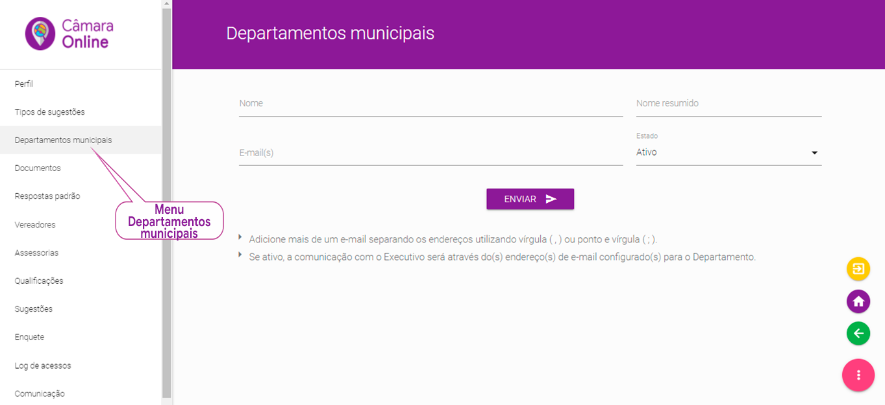

A Plataforma de Colaboração Cidadã “Câmara Online” gera automaticamente diversos tipos de correspondências, podendo ser as mesmas endereçadas diretamente aos setores responsáveis pelas demandas levantadas pelos cidadãos.
Além disso, o cidadão terá a chance de avaliar o serviço prestado por cada unidade gestora da prefeitura, permitindo ao parlamentar acompanhar a performance do poder executivo no que tange à qualidade de atendimento.
Desta forma é imperativo nesse momento que sejam cadastrados todos as secretarias municipais, autarquias ou mesmo empresas que executam serviços terceirizados, que habitualmente são alvo de demandas pela população.
Esta é a tela para cadastramento dessas unidades, que chamamos para todos os efeitos de Unidades Gestoras, assim chamados os departamentos, autarquias e empresas terceirizadas detentoras de serviços e atividades fim à população.
Cadastrando as Secretarias Municipais
Para cadastrá-las o usuário deve clicar no menu Departamentos Municipais, posteriormente clicar no botão no canto inferior direito e então clicar no botão . Fazendo isso, abre-se um formulário de cadastramento das Unidades Gestoras.

Cadastro de Departamentos Municipais
Os dados solicitados são “Nome” do departamento municipal para constar eventualmente em ofício de indicação, “Nome resumido” para constar no aplicativo e “E-mail(s)”.
Ao informar o endereço eletrônico no cadastramento da unidade gestora, esta fica habilitada a receber e-mails automáticos reiterando a solicitação do vereador, quando do término do prazo para execução de ocorrências de sua responsabilidade.
Observação: É permitido inserir no campo “E-mail(s)” mais de um endereço eletrônico, separados por vírgula ou ponto e vírgula. Quando isso ocorrer, o sistema enviará aos e-mails cadastrados mensagens automáticas de reiteração das solicitações de vereadores de atendimento de ocorrências de responsabilidade daquela unidade, que excederam o prazo de execução.
Finalmente você informará se aquela unidade irá ou não ser objeto de correspondência geradas pelos vereadores e para isso você escolherá entre os status ativo ou inativo.
Ao clicar no botão "ENVIAR " a unidade gestora estará completamente criada.